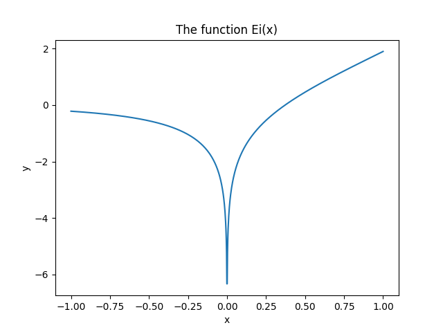
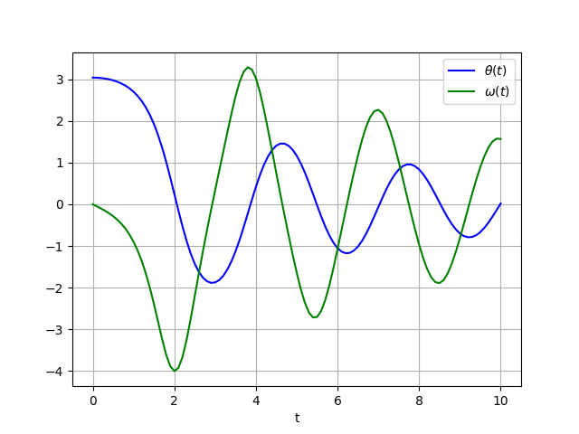
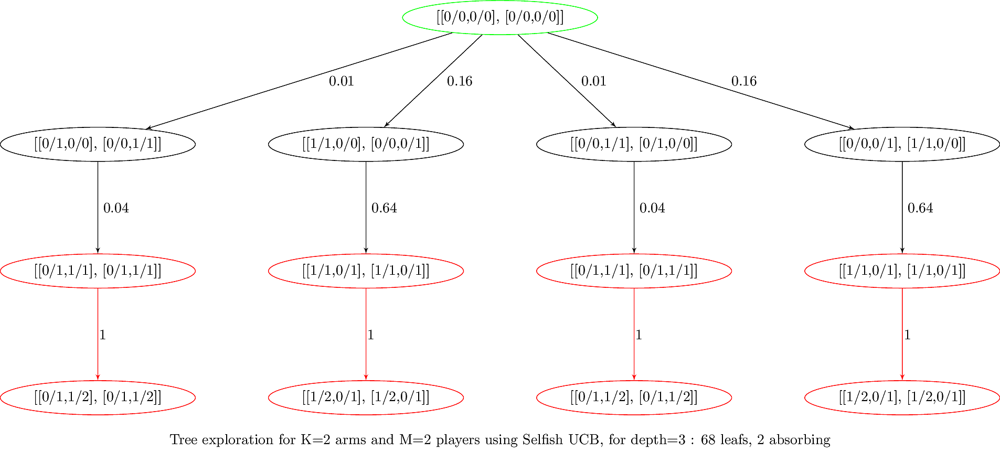
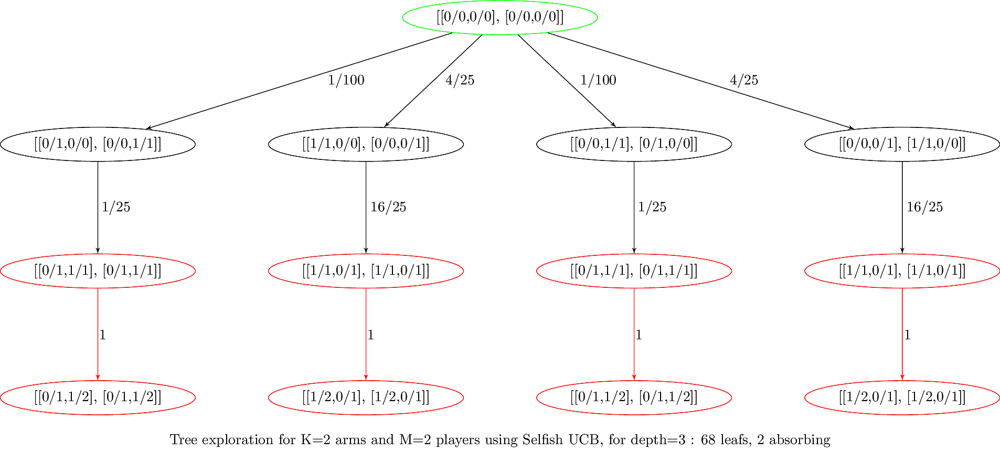
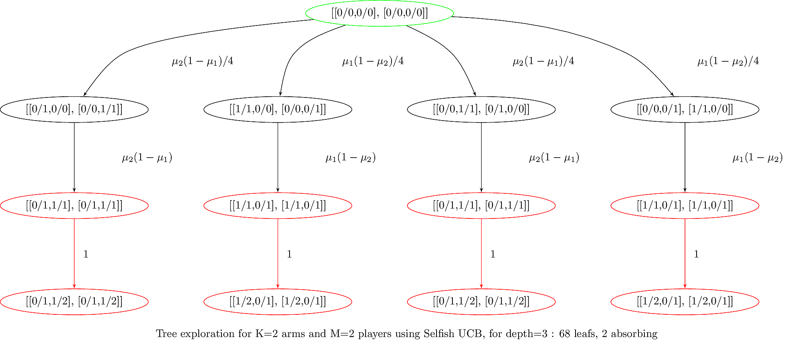

count: true ## 4th 2017/18 GouTP @ SCEE - *About:* **Python introduction for MATLAB users** - *Date:* 18th of January 2018 - *Who:* Lilian Besson --- ## What's a *"GouTP"* ? - **Internal monthly technical training session** 📅 - Usually: *Thursday 3pm - 3:30pm* - With ☕ coffee and 🍪 sweets : we relax while training ! > Initiative of Quentin and Vincent 👏 in last January... > Continued by Rémi and Lilian 👌 ! #### Not only @ SCEE ? - Currently open to the *FAST* and *AUT* teams --- ## Agenda for today [30 min] 1. What is Python [5 min] 2. Main differences in syntax and concepts [5 min] 3. Examples of problems solved Python [10 min] 4. Where can you find more information ? [5 min] --- ## 1. What is Python 🐍 ? - developed and popular from the last 25 years - Open-source and free programming language - Interpreted, multi-platform, imperative and object-oriented - Designed and acknowledged as *simple to learn and use* - Used worldwide: research, data science, web applications etc ##### Ressources - **Website**: python.org for the language & pypi.org for packages - Documentation : docs.python.org (:fr: [docs.python.org/fr/3](https://docs.python.org/fr/3) translation in progress) --- ## Comparison with MATLAB | | Python 😃 | MATLAB 😢 |:-|:-:|:-:| | **Cost** | Free ✌ | Hundreds of euros / year | **License** | Open-source | 1 year user license (no longer after your PhD!) | **Comes from** | A non-profit foundation, and the community | MathWorks company | **Scope** | Generic | Numeric only | **Platform** | Any 💻 📱 | Desktop only 💻 | **Usage** | Generic, worldwide 🌎 | Research in academia and industry --- > But Python don't have only advantages… | | Python 😢 | MATLAB 😃 |:-|:-:|:-:| | **Packaging** | Different solutions (`conda`, `pip`, it works fine) | Toolboxes already included | **IDE** | Many possibilities, have to chose one (*Spyder*) | Good IDE already included | **Support?** | Community (StackOverflow, IRC, mailing lists etc) | By MathWorks ? | **Performances** | Interpreted, not so fast (check *Pypy* for speed)| Faster (but worse than C, Julia) | **Documentation** | OK but very diverse | OK and inline --- ## How to install Python ⬇ - On Linux and Mac OS : already installed! - On Windows: + You can use the default installer from [python.org/downloads/windows](https://www.python.org/downloads/windows/) 🐍 + Or the full installer from [anaconda.com/download](https://www.anaconda.com/download/) (✨) - Takes about 10 minutes... and it's free ! > ⚠ Choose **Python 3** (currently 3.6.4) **not 2 !** > ⚠ Python 2 will stop in less than 3 years (pythonclock.org) --- ## My suggestions for Python 🐍 - Use **Anaconda** to install (and upgrade) Python and packages - Use **IPython** for the command line (✨ awesome features !) - Use: + **Spyder** for your IDE if you like the MATLAB interface (installed in Anaconda, or github.com/spyder-ide/spyder) + **PyCharm** if you want "the most powerful Python IDE ever" + Or a good generic text editor + a plugin for Python (Emacs, Vim, Atom, SublimeText, **Visual Studio Code**…) - Use **Jupyter notebooks** to write or share your experiments (jupyter.org, eg. github.com/Naereen/notebooks) > More suggestions: pierreh.eu/python-setup by Pierre Haessig --- #### 📦 How to install modules in Python - If you used Anaconda, use `conda install [name]` (in a terminal) to install module `[name]`, - Or with the standard installer, use `pip install [name]`. #### 🔍 How to find the module you need ? - Ask your colleagues 😄 ! - Look on the Internet ! - Look directly on [pypi.org](https://pypi.org) (official) or [anaconda.org](https://anaconda.org) --- ## 📦 Overview of main Python modules > Standard library is very rich, but not for scientific applications - **Numpy** (numpy.org) for `numpy.array` for multi-dim arrays and linear algebra - **Scipy** (scipy.org) for numerical computations (signal processing, integration, ODE integration, optimization etc) - **Matplotlib** (matplotlib.org) for MATLAB-like 2D and 3D plots - **pandas** for data manipulation (very powerful) - **Scikit-Learn** (scikit-learn.org) for "classical" Machine Learning - **Scikit-image** for 2D and generic image processing - **Keras** (keras.io) for neural networks and deep learning > And many others ! Check pypi.org --- ## 2. Main differences in syntax between Python and MATLAB > Ref: mathesaurus.sourceforge.net/matlab-python-xref.pdf | | Python | MATLAB |:-|:-:|:-:| | **File ext.** | `.py` | `.m` | **Comment** | `# blabla...` | `% blabla...` | **Indexing** | `a[0]` to `a[-1]` | `a(1)` to `a(end)` | **Slicing** | `a[0:100]` (view) | `a(1:100)` (⚠ copy) | **Operations** | Element-wise by default | Linear algebra by default | **Logic** | Use `:` and indexing | Use `endif` `endfor` etc --- | | Python | MATLAB |:-|:-:|:-:| | **Help** | `help(func)` or `func?` (IPython) | `help func` | **And** | `a and b` | `a && b` | **Or** | `a or b` | `a || b` | **Datatype** | `np.array` of *any* type | multi-dim doubles array | **Array** | `np.array([[1,2],[3,4]], dtype=float)` | `[1 2; 3 4]` | **Size** | `np.size(a)` | `size(a)` | **Nb Dim** | `np.ndim(a)` | `ndims(a)` | **Last** | `a[-1]` | `a(end)` > With `import numpy as np` --- | | Python | MATLAB |:-|:-:|:-:| | **Tranpose** | `a.T` | `a.'` | **Conj. transpose** | `a.conj().T` | `a'` | **Matrix** x | `a.dot(b)` or `a @ b` | `a * b` | **Element-wise** x | `a * b` | `a .* b` | **Element-wise** / | `a / b` | `a ./ b` | **Element-wise** ^ | `a ** 3` | `a .^ 3` | **Zeros** | `numpy.zeros((2,3,5))` | `zeros(2,3,5)` | **Ones** | `numpy.ones((2,3,5))` | `ones(2,3,5)` | **Identity** | `numpy.eye(10)` | `eye(10)` | **Range** for loops | `range(0, 100, 2)` | `1:2:100` | **Range** for arrays | `numpy.arange(0, 100, 2)` | `1:2:100` --- | | Python | MATLAB |:-|:-:|:-:| | **Maximum** | `np.max(a)` | `max(max(a))` ? | **Random matrix** | `np.random.rand(3,4)` | `rand(3,4)` | L2 **Norm** | `np.sqrt(v @ v)` or `L.norm(v)` | `norm(v)` | **Inverse** | `L.inv(a)` | `inv(a)` | **Pseudo inv** | `L.pinv(a)` | `pinv(a)` | **Solve syst.** | `L.solve(a, b)` | `a \ b` | **Eigen vals** | `V, D = L.eig(a)` | `[V,D]=eig(a)` | **FFT/IFFT** | `np.fft(a)`, `np.ifft(a)` | `fft(a)`,`ifft(a)` > With `import numpy as np; import numpy.linalg as L` --- ## 3. Scientific problems solved with Python > Just to give examples of syntax and modules 1. 1D numerical integration and plot 3. Solving a 2D Ordinary Differential Equation 2. Solving a constraint optimization problem and plotting solution 4. A simple neural network 5. Symbolic computations --- ## 3.1. 1D numerical integration and plot > Goal : evaluate and plot the function on [-1, 1] : > $$\mathrm{Ei}(x) := \int_{-\infty}^x \frac{\mathrm{e}^u}{u} \;\mathrm{d}u$$ #### How to? Use modules! - `numpy` for maths functions and arrays - `scipy.integrate.quad` function for numerical integration - `matplotlib.pyplot.plot` for 2D plotting --- ```python import numpy as np # standard convention import matplotlib.pyplot as plt # standard convention from scipy.integrate import quad # need only 1 function def Ei(x, minfloat=1e-6, maxfloat=1000): def f(t): return np.exp(-t) / t if x > 0: return -1.0 * (quad(f, -x, -minfloat)[0] + quad(f, minfloat, maxfloat)[0]) else: return -1.0 * quad(f, -x, maxfloat)[0] X = np.linspace(-1, 1, 1000) # 1000 points Y = np.vectorize(Ei)(X) # or [Ei(x) for x in X] plt.plot(X, Y) # MATLAB-like interface plt.title("The function Ei(x)") plt.xlabel("x"); plt.ylabel("y") plt.savefig("figures/Ei_integral.png") plt.show() ``` --- <center></center> --- ## 3.2. Solving a 2D Ordinary Differential Equation > Goal : solve and plot the differential equation of a pendulum : > $$\theta''(t) + b \,\theta'(t) + c \,\sin(\theta(t)) = 0$$ #### How to? Use modules! - `scipy.integrate.odeint` function for ODE integration - `matplotlib.pyplot.plot` for 2D plotting --- ```python import numpy as np import matplotlib.pyplot as plt from scipy.integrate import odeint # use Runge-Kutta 4 def pend(y, t, b, c): # function definition return np.array([y[1], -b*y[1] - c*np.sin(y[0])]) b, c = 0.25, 5.0 # tuple assignment y0 = np.array([np.pi - 0.1, 0.0]) t = np.linspace(0, 10, 101) # on [0,10] with 101 points sol = odeint(pend, y0, t, args=(b, c)) plt.plot(t, sol[:, 0], 'b', label=r'$\theta(t)$')# blue plt.plot(t, sol[:, 1], 'g', label=r'$\omega(t)$')# green plt.legend(loc='best') plt.xlabel('t') plt.grid() plt.savefig("figures/Pendulum_solution.png") plt.show() ``` --- <center></center> --- ## 3.3. Constraint optimization problem > Goal: minimize a function under inequality constraints > $$f(x,y) := (x - 1)^2 + (y - 2.5)^2$$ > $$\text{such that } \begin{cases}x \geq 0 \text{ and } y \geq 0 \\ x - 2y + 2 \geq 0 \\ - x - 2y + 6 \geq 0 \\ x + 2y + 2 \geq 0\end{cases}$$ #### How to? - `scipy.optimize.minimize` function for minimization - `matplotlib.pyplot.plot` for 2D plotting --- ```python import numpy as np import matplotlib.pyplot as plt from scipy.optimize import minimize def obj(x): return (x[0] - 1)**2 + (x[1] - 2.5)**2 x0 = (2, 0) # first guess bnds = ((0, None), (0, None)) # [0, +oo) for x and y cons = ({'type': 'ineq', 'fun': lambda x: x[0]-2*x[1]+2}, {'type': 'ineq', 'fun': lambda x:-x[0]-2*x[1]+6}, {'type': 'ineq', 'fun': lambda x:-x[0]+2*x[1]+2}) res = minimize(obj, x0, method='SLSQP', bounds=bnds, constraints=cons) print("Minimum is", res.x) # (1.4, 1.7) ``` --- ## 3.4. A simple neural network > Using keras (keras.io) it's very simple and concise 😎 ! ```python from keras.models import Sequential model = Sequential() from keras.layers import Dense model.add(Dense(units=64, activation='relu', input_dim=100)) model.add(Dense(units=10, activation='softmax')) model.compile(loss='categorical_crossentropy', optimizer='sgd', metrics=['accuracy']) ## x_train and y_train are Numpy arrays ## just like in the Scikit-Learn API. model.fit(x_train, y_train, epochs=5, batch_size=32) ## evaluate or predict using the model loss_and_metrics = model.evaluate(x_test, y_test, batch_size=128) classes = model.predict(x_test, batch_size=128) ``` --- ## 3.5. Symbolic computations - Almost impossible to do in MATLAB… - Most Python code written for numerical values also works for symbolic values! Use **SymPy** module - Powerful webtool like Wolfram|Alpha : [sympygamma.com](http://www.sympygamma.com/) - An example from my latest article… + the same code works for numbers + or exact fractions + or symbols $\mu_1,\ldots,\mu_K$ --- ##### Example : generated graph with numbers <center></center> > Graph saved a DOT file and to a TikZ graph with [dot2tex](https://github.com/Naereen/dot2tex) --- ##### Example : generated graph with fractions <center></center> > Source: [banditslilian.gforge.inria.fr/docs/complete_tree_exploration_for_MP_bandits.html](http://banditslilian.gforge.inria.fr/docs/complete_tree_exploration_for_MP_bandits.html) --- ##### Example : generated graph with symbols <center></center> --- ## Conclusion (1/3) #### Sum-up - I hope you got a good introduction to Python + Good tutorials: www.scipy-lectures.org - It's not hard to migrate from MATLAB to Python - More ressources: + official documentation : docs.scipy.org/doc/numpy-dev/user/numpy-for-matlab-users.html + a good 45-minute training video : youtu.be/YkCegjtoHFQ + mathesaurus.sourceforge.net/matlab-numpy.html and mathesaurus.sourceforge.net/matlab-python-xref.pdf --- ## Conclusion (2/3) #### Next GouTP @ SCEE > By Lilian - Jupyter notebooks for teaching and research $\hookrightarrow$ jupyter.org #### GouTP @ FAST or AUT ? > By Pierre Haessig - Julia programming language (~ between Python and Matlab) $\hookrightarrow$ julialang.org > By you ? Any idea is welcome! --- ## Conclusion (3/3) > *Thanks for joining 👏 !* *Contact us if you want to do a GouTP!* #### Your mission, if you accept it... 💥 1. *Padawan level:* Train yourself a little bit on Python 🐍 $\hookrightarrow$ introtopython.org or learnpython.org 2. *Jedi level:* Try to solve a numerical system, from your research or teaching, in Python instead of MATLAB 3. *Master level:* From now on, try to use open-source tools for your research (Python and others)